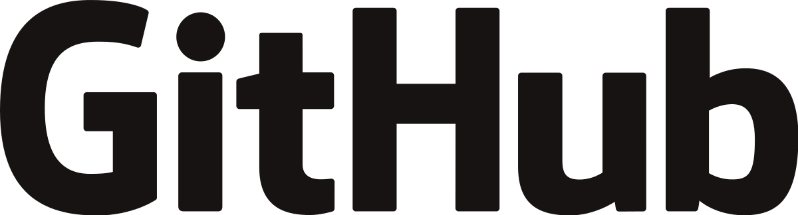

Información general

El curso de Diseño de sitios Web, componente electivo de los Programas de Tecnología e Ingeniería de Sistemas tiene como objetivo la fundamentación de los conceptos básicos en el Diseño de sitios Web, de los estudiantes de estos programas o programas afines y/o particulares, bajo la estrategia de educación abierta y a distancia.
El curso tiene 3 créditos académicos los cuales comprenden el estudio
y el acompañamiento tutorial, con el
propósito de:
- Fundamentar la concepcíon sistémica de moldeamiento de la programacion en internet
- Capacitar a los estudiantes para la compresión, aprehensión de los
propios de la programacion en internet - Fomentar en el estudiante el espíritu investigativo, depertar la creatividad
en el desarrollo de las soluciones a problemas en el amplio espacio
internet
Objetivos del OVI
git hub es una plataforma para el control de versiones para alojar proyectos realizar diferentes cambios que se realizan sobre los elementos del producto así mismo los cambios que se hagan y actualiza en las versiones mostrando el código de desarrollo para llevar el control git hub fue escrito sobre Ruby on rails un framework hecho con lenguaje de programación Ruby antes git se llamaba LOGICAL AWESOME LCC git hub se acostumbra a mantener los proyectos de forma pública.